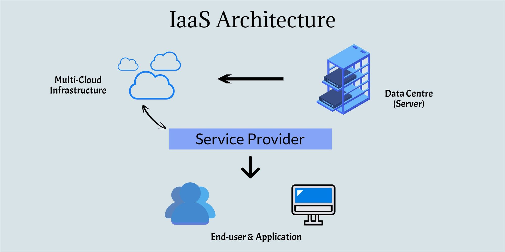
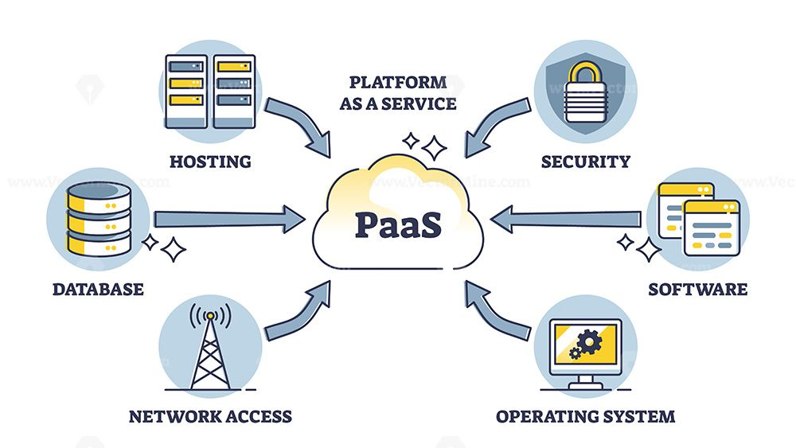
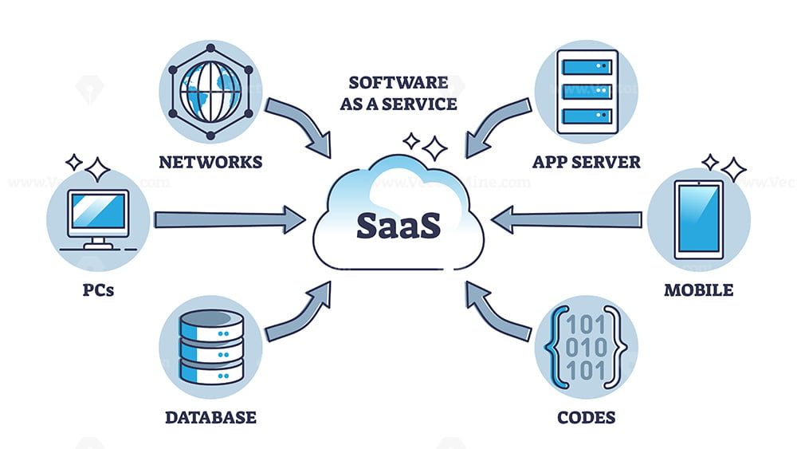

Three Cloud Service Models
← Back to Home
1. IaaS - Infrastructure as a Service

Definition
IaaS provides virtual servers, storage, and networking
over the Internet. Users can manage their operating
systems and applications.
Real-world Example
Amazon EC2 allows businesses to rent virtual servers
to host websites without purchasing physical hardware.
2. PaaS - Platform as a Service

Definition
PaaS provides a development platform that allows
developers to build, test, and deploy applications
without managing the underlying infrastructure.
Real-world Example
Google App Engine allows developers to deploy web
applications without managing physical servers.
3. SaaS - Software as a Service

Definition
SaaS provides ready-to-use software through the Internet.
Users can access applications without installing or
maintaining the underlying infrastructure.
Real-world Example
Gmail allows users to send and receive emails directly
through a web browser without managing email servers.
Cloud Service Providers
1. IaaS - Infrastructure as a Service
Popular providers:
-
Amazon Web Services (AWS) -
EC2: Provides virtual servers for hosting websites.
-
Microsoft Azure -
Azure Virtual Machines: Provides virtual computers.
-
Google Cloud Platform (GCP) -
Compute Engine: Provides virtual machines and computing resources.
-
DigitalOcean -
Droplets: Provides cloud-based virtual servers.
2. PaaS - Platform as a Service
Popular providers:
-
Google Cloud -
App Engine: Deploy applications without managing servers.
-
Microsoft Azure -
App Service: Build and host web applications.
-
AWS -
Elastic Beanstalk: Deploy and manage applications easily.
-
Heroku -
Heroku Platform: Deploy applications without managing infrastructure.
3. SaaS - Software as a Service
Popular providers:
-
Google -
Gmail, Google Docs, Google Drive: Email, document editing and storage.
-
Microsoft -
Microsoft 365, Teams: Office applications and online collaboration.
-
Salesforce -
Salesforce CRM: Customer relationship management.
-
Zoom -
Zoom Meetings: Online video conferencing.